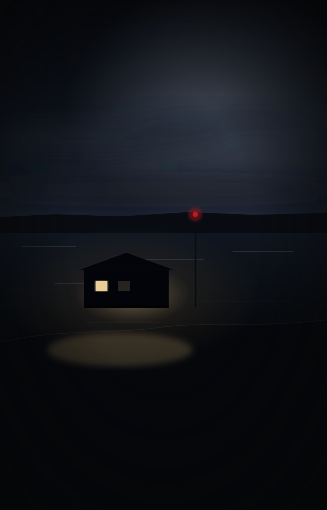

CASE #000
FREE
CASE #000
FREE
The Last Guest
A watch stopped at 02:14. A soaked jacket on a dry night. And a photograph taken after the guest had gone.
INTRODUCTORY10–15 min6 exhibitsArdmair
FREE SAMPLE
Free

Archive status · 2 files open · accepting investigators
Some cases were never
meant to be solved.
01 / The featured file
Case #001
At 02:41 the station door opened for eight seconds. At 03:38 it opened again. In between, the recorder in the common room captured a chair moving, two pages turning, and a woman’s voice saying six words.
Her coat was on the rack. The boat was on its mooring. Forty millimetres of snow across the approach and not one outbound footprint. The inquiry could not reconcile the recording with the search, and left the file open.
Everything required to close it is in the dossier.
02 / How an investigation works
Each case opens as a working dossier. Nothing is narrated to you. You are given what was recorded — and some of what was recorded is wrong.
The brief, the persons involved, the site, and a master timeline sourced to the exhibit that establishes each entry.
Statements, sensor logs, transcripts, photographs, charts. Open them in any order. Flag what matters. Write on them.
Put two exhibits side by side and submit the pair. When they genuinely contradict each other, the file tells you what you have found.
Reconstruct the mechanism, not just the culprit. What happened, how it was covered, and who helped.
The conclusion is graded against your reconstruction, step by step — and one sealed exhibit is released with it.
Progress is kept between sittings on your own device. You can close the file and come back to it.
03 / Why The Unknown File
We hand you the same material an investigator would have had, including the parts that lead nowhere, and we do not tell you which is which until you have decided.
That is a harder product to make and a harder product to sell. It is also the only version worth buying twice.
Solvable
Every conclusion is reachable from the exhibits alone. No case depends on information we withheld from you, and none of them ends in “we may never know”.
Adversarial
Files contain contradictions that matter and contradictions that do not. Telling them apart is the game. A red herring here is a genuine inconsistency with an innocent explanation.
Honest
Our cases are fiction and we say so on every one. When our short-form content covers a documented real-world case, it is labelled as documented and we do not invent details to make it land better.
A watch stopped at 02:14. A jacket soaked through on a night with no rain. And a photograph the guest took after he had already gone.
Six exhibits. Ten to fifteen minutes. It teaches you the one habit every case in this archive is built to punish you for not having — and it gives nothing about Case #001 away.
04 / The archive
CASE #000
FREE
A watch stopped at 02:14. A soaked jacket on a dry night. And a photograph taken after the guest had gone.
 CASE #001
OPEN
CASE #001
OPEN
At 02:41 the door opened. At 03:38 it opened again. In between, a recorder captured a woman who was already gone.
 CASE #002
SOON
CASE #002
SOON
A answering machine in an empty flat recorded nine minutes of a conversation that three people deny having.
CASE #003
SOON
She appears on four cameras in eleven minutes. Two of them are pointed at the same place.
05 / Transmissions
Every clip we publish is one page of a real file, ending on the detail that does not fit. Nothing is exaggerated to make it land, and nothing is resolved to make it shareable.
Documented cases are labelled documented. Our own cases are labelled fiction. We do not blur the two, in either direction.
How a clip becomes a caseTransmission 014 · fictional case
At 02:17 the recording stops.
Three seconds later, the same voice appears again.
The problem?
The person who made the recording had already been reported missing.
Would you have noticed the clue?
06 / Investigator feedback
Placeholder — awaiting real reviewsSo there is nothing honest to put here. These three cards show the format reviews will take once real investigators have finished a case. They are examples, not customers, and they will be replaced with verified purchases only.
Example review — the kind of feedback this space is reserved for.
Example review — the kind of feedback this space is reserved for.
Example review — the kind of feedback this space is reserved for.